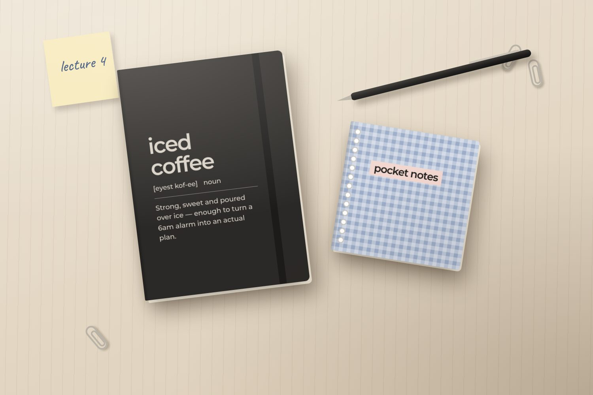
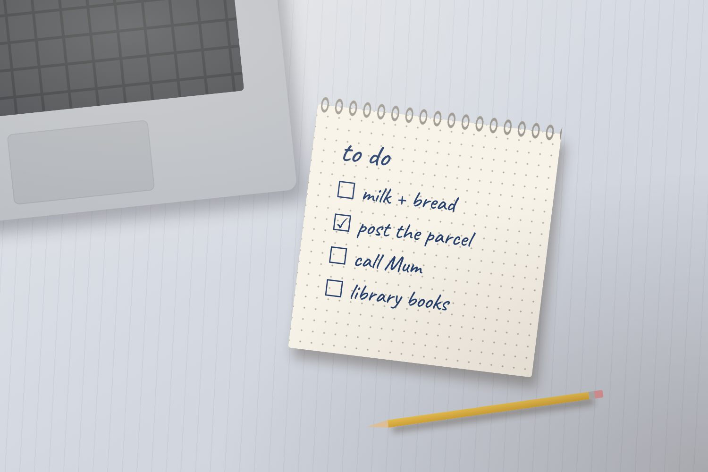

Spiral notebook or hardcover notebook? How to choose

Spiral notebooks fold back and tear out clean. Hardcovers last and travel well. Here is how to pick the right one for lectures, lists, journals and gifts.
Walk into any newsagent and the notebook wall splits in two: spiral notebooks on one side, hardcover notebooks on the other. Both hold paper. They just suit different days. Here is how to choose between notebooks with a spiral binding and notebooks with a hard cover, without overthinking it.
What a spiral notebook does well
- It folds back on itself. A spiral notebook opens a full 360 degrees, so you can write on one page with the rest of the book folded behind it. Handy on a crowded lecture desk or a train.
- It lies flat every time. The coil means no fighting the spine to keep a page open.
- Pages come out easily. Good for to-do lists, shopping lists and notes you mean to hand to someone.
- It is light. A spiral notebook is usually thinner and lighter than a hardcover with the same number of pages.

The trade-offs: the coil can catch in a bag, pages can work loose at the holes over time, and many left-handed writers find a side coil gets in the way of their hand. A spiral bound at the top avoids that last one.
What a hardcover notebook does well
- A rigid cover is a desk you carry. You can write on your lap, on a bench or standing up.
- It protects the pages. Corners stay square in a bag full of keys and chargers.
- It lasts. A bound notebook keeps a year of notes together, which is why journals, planners and keepsakes are almost always hardcover.
- Lay-flat binding closes the gap. A well-bound hardcover opens flat too. It just does not fold all the way back.
Spiral vs hardcover at a glance
| Spiral notebook | Hardcover notebook | |
|---|---|---|
| Opens flat | Yes, and folds back 360° | Yes, if the binding is lay-flat |
| Writing without a desk | Harder if the cover is soft | Easy, the cover is rigid |
| Tearing pages out | Easy | Possible, but it shows |
| Life in a busy bag | The coil can snag or bend | Holds up well |
| Best for | Lectures, lists, scrap work | Journals, planners, gifts |
Which one should you buy?
- For uni lectures: either works. Pick a spiral notebook if you like folding it back on a small desk, a hardcover if you want a whole term of notes to stay together.
- For a daily journal or planner: hardcover. It stays neat for the whole year.
- For quick lists and phone numbers: a small spiral notebook that lives beside the laptop or in a coat pocket.
- As a gift: hardcover. It feels like a keepsake rather than supplies.
What we make
Most Paper Land notebooks are A5 hardcovers with lay-flat binding and 160 numbered pages of 120gsm ivory paper. We make one spiral notebook: Pocket Notes, a 10 × 10 cm square with 80 pages of 5mm dot grid, made for lists rather than long entries.
Quick answers
Do spiral notebooks lie flat? Yes. The coil lets every page lie flat and fold right back.
Are spiral notebooks good for left-handed writers? A side coil often gets in the way of a left hand. A top-bound spiral or a hardcover is usually more comfortable.
Is a hardcover notebook worth the extra cost? If you want to keep what you write, usually yes. If the notes are throwaway, a spiral notebook does the job.